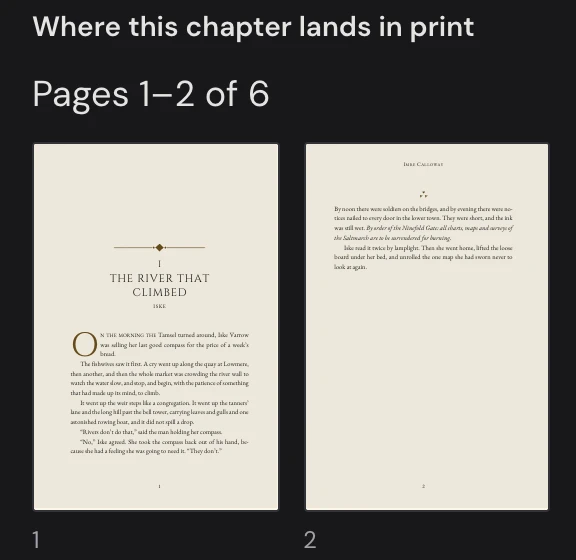

Where this chapter lands in print
The editor knows its page numbers. The chapter's real typeset pages sit beside you, so you watch a scene grow from two pages to five as you write it.
Spell checking, daily and book word goals, and snapshots of the whole book are built in.